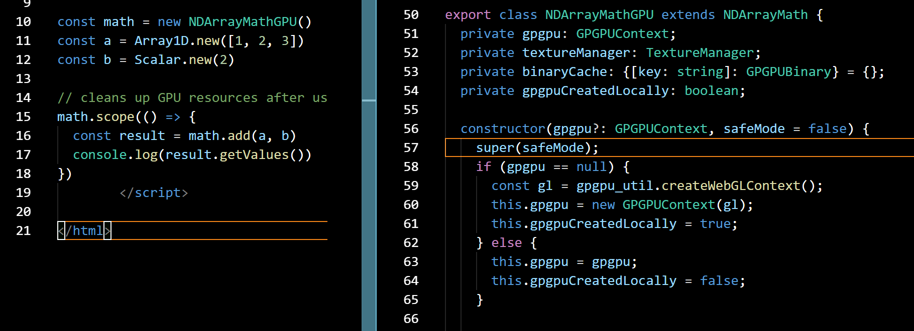
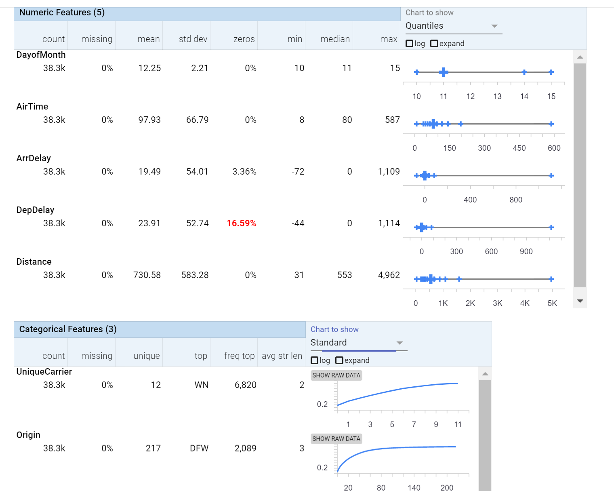

Educate, Develop, Visualize, Deploy
Why the Browser and Machine Learning are a perfect match
Minds Mastering Machines [M³], London 2017
Oliver Zeigermann / @DJCordhose
Wait, but why?
Python and R are predominant
- Have a large and mature set of libs
- Are reasonably fast
- Use bindings to C/C++ or Fortran for speed and reuse
(I) Educate
Everyone can be educated, they just need a browser and internet
Concepts are much easier to grok when you can play around with them
Tensorflow Playground
Playing with Neural Networks without any installation

Neural Networks Simulator
Understanting Neural Networks at a more in depth level
Demo: Understanding Neural Networks
zero installation available from all devices
http://playground.tensorflow.org
- Learn about the process of training
- How does a neuron work?
- Neural Network Architecture
More Education
PCA Explained Visually
PCA: exploratory data analysis tool to reduce dimensions to most significant features
How to properly use TSNE
t-SNE: Visualize data into 2-dim scatter plots
http://distill.pub/2016/misread-tsne/
Distill's All Star Team makes academic advances accessible:
https://distill.pub
Interactive Tutorial on Numerical Optimization
Play around with Gradient Descent and other Optimization Algorithms

Image Kernels
You might know from Photoshop etc., used in Convolutional Neural Networks

http://setosa.io/ev/image-kernels/
There are many more interactive explanations here:
http://setosa.io/ev
Education: Also get kids interested
Experiment to explore how machine learning works
Built using deeplearn.js (more on that later in this talk), source code available

Fun Experiment
Let the computer guess what you are drawing
https://quickdraw.withgoogle.com
Also part of
Google AI Experiments
(II) Develop
Most obvious reason: JavaScript is the language you are most comfortable with
You just happen to develop for the browser
deeplearn.js
Full TypeScript ML library using browser GPU

https://pair-code.github.io/deeplearnjs
Includes full training mimicking TensorFlow and NumPy API https://research.googleblog.com/2017/08/harness-power-of-machine-learning-in.html
More Machine Learning with JavaScript
- ConvNetJS: Visual NN exploration for learning (t-SNE cluster exploration from same auhtor)
- Brain.js : simple and straing forward NN implementation
- synaptic.js: similar scope as Brain.js, a bit more active
- ml.js: generic low level libs for machine learning
Demo: deeplearn.js
Use all Browser features in combination with Machine Learning
https://pair-code.github.io/deeplearnjs/docs/tutorials/intro.html
(III) Visualize
Interactively explore your data
Demo: Data Insight
Interactively explore even large amounts of data to understand what goes inside your model
Demo 2: Looking at the Quickdraw Dataset
Pivoting on random data

(IV) Deploy
JavaScript might be the only language around
because all you have is a browser
- you on your mobile phone
- AI in browser based game
- combination with interactive visualizations and other browser features (like audio and video)
Keras.js
Running Keras Models in the Browser using GPU

https://transcranial.github.io/keras-js
Alternative: https://mil-tokyo.github.io/webdnn/
TensorFire
GPU based inference (no training) in the browser, runs Keras and TensorFlow models
Demo: Keras.js
Deploying production grade Keras Models
- Sentiment Analysis trained on IMDB
- ResNet / Inception V3 on ImageNet
Wrapping Up
Browser based ML apps
- can make use of any GPU (not only CUDA)
- have highest reach due to zero installation
- can be easily integrated into existing Web Apps
- allow for best visualization
- are ideal for interactive learning
Machine Learning in the Browser, Minds Mastering Machines [M³], London 2017
Oliver Zeigermann / @DJCordhose
http://bit.ly/mcubed-js